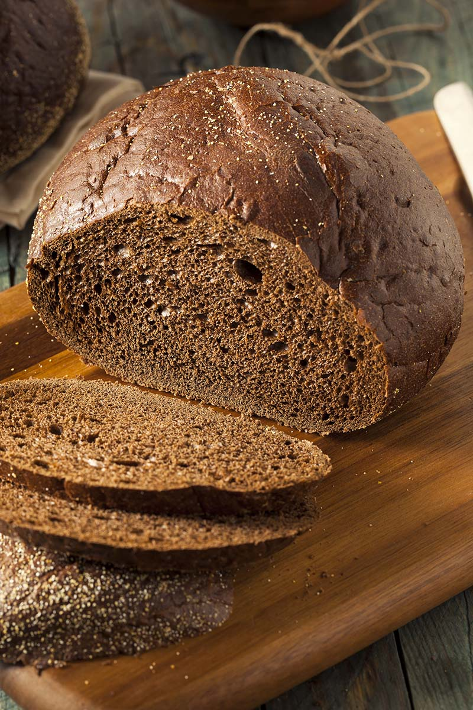

Homemade Bread Recipe

This rye bread is so delicious you'll want to make extra to share with your family, friends, and neighbors! Having lived in Northwest Connecticut for over 35 years, in close proximity to NYC with its great Jewish delis, baking some of the finest rye bread going, I snagged this recipe from a friend. Hope you like it!
Ingredients
- 2 cups unbleached bread flour
- 1 cup dark rye flour
- 3 Tbsp dry potato flakes
- 2 Tbsp caraway seeds
- 1.5 Tbsp demerara sugar
- 2.5 tsp instant yeast
- 1.5 tsp sea salt
- 1 cup warm
- 0.25 cup canola oil
- 0.25 cup sour pickle juice
Steps
- Place bread flour, rye flour, potato flakes, caraway seeds, demerara sugar, yeast, and sea salt in the bowl of a large stand mixer fitted with the paddle attachment. Turn mixer to low and thoroughly mix dry ingredients. Beat warm water, canola oil, and pickle juice into dry ingredients.
- Switch to the dough hook attachment and beat until dough is rough and shaggy-looking. Cover bowl with plastic wrap and let rest for exactly 30 minutes.
- Remove plastic wrap and knead with the dough hook until smooth, firm, and only slightly sticky, 6 to 8 minutes. Turn dough onto a floured work surface and knead until smooth, 1 to 2 more minutes.
- Form dough into a ball. Lightly oil a large bowl, place the dough in the bowl and turn to coat. Cover the bowl with plastic wrap, set into a warm place, and let rise until nearly double, about 1 hour.
- Grease a 5x9-inch loaf pan. Turn dough onto a lightly oiled surface, shape into a log, and place into the prepared loaf pan. Cover with a cloth kitchen towel and let rise until top of dough has risen slightly over the top of the pan, 60 to 90 minutes.
- Place rack in the middle of the oven; preheat the oven to 350 degrees F (175 degrees C).
- Bake loaf in preheated oven until golden brown and cooked through, about 35 minutes. The internal temperature of the bread should be 190 degrees F (90 degrees C). If loaf browns too quickly, cover loosely with a tent of aluminum foil with the shiny side out. Remove loaf from the pan and cool on a wire rack.